Before 2017
- Schottky-Barrier-Free Contacts with Two-Dimensional Semiconductors by Surface-Engineered MXenes
- Liu, Y.; Xiao, H.; Goddard, W. A.
- Journal of the American Chemical Society 138, 15853-15856
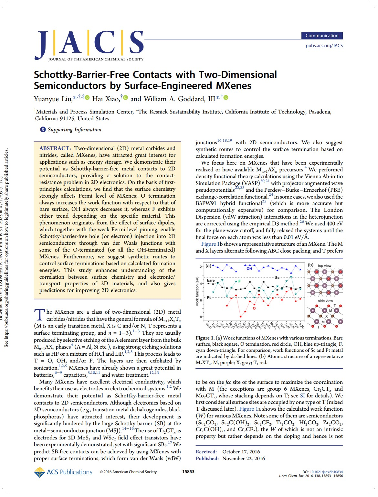
- Reaction Mechanisms for the Electrochemical Reduction of CO(2) to CO and Formate on the Cu(100) Surface at 298 K from Quantum Mechanics Free Energy Calculations with Explicit Water
- Cheng, T.; Xiao, H.; Goddard, W. A.
- Journal of the American Chemical Society 138, 13802-13805
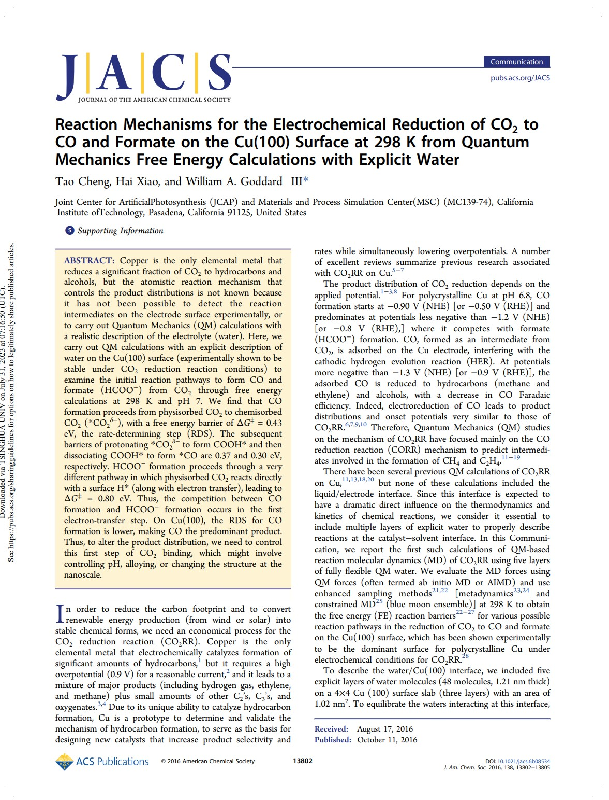
- Influence of Constitution and Charge on Radical Pairing Interactions in Tris-radical Tricationic Complexes
- Cheng, C.; Cheng, T.; Xiao, H.; Krzyaniak, M. D.; Wang, Y.; McGonigal, P. R.; Frasconi, M.; Barnes, J. C.; Fahrenbach, A. C.; Wasielewski, M. R.; Goddard, W. A.; Stoddart, J. F.
- Journal of the American Chemical Society 138, 8288-8300
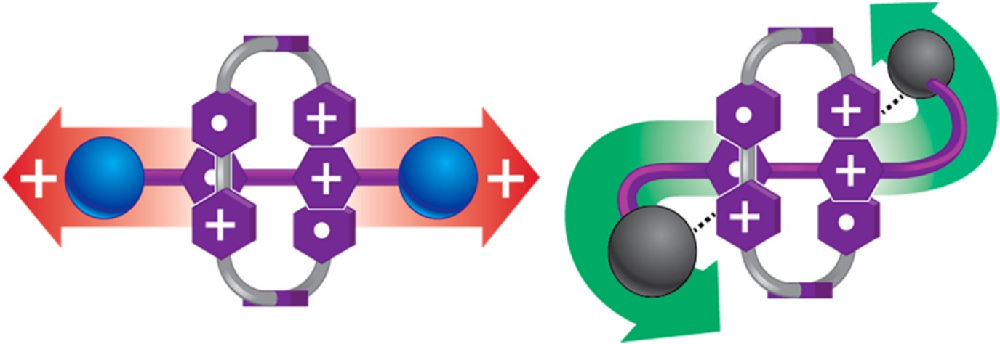
- Pressure-Dependent Polymorphism and Band-Gap Tuning of Methylammonium Lead Iodide Perovskite
- Jiang, S.; Fang, Y.; Li, R.; Xiao, H.; Crowley, J.; Wang, C.; White, T. J.; Goddard, W. A.; Wang, Z.; Baikie, T.; Fang, J.
- Angewandte Chemie International Edition 55, 6540-6544
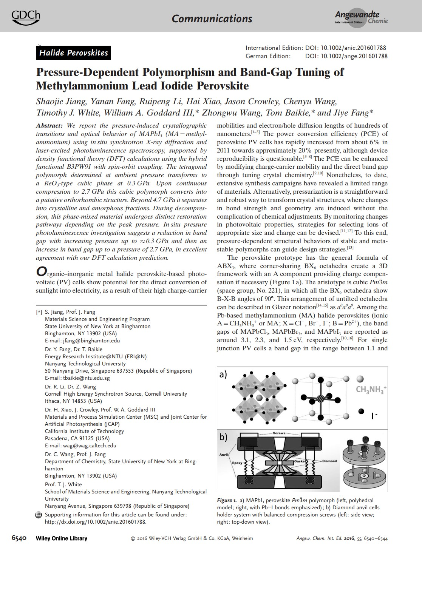
- Two-Dimensional Halide Perovskites: Tuning Electronic Activities of Defects
- Liu, Y.; Xiao, H.; Goddard, W. A.
- Nano Letters 16, 3335-3340
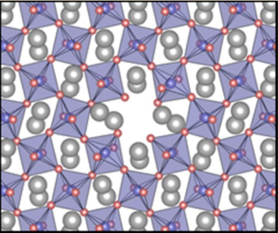
- p-Type Co Interstitial Defects in Thermoelectric Skutterudite CoSb3 Due to the Breakage of Sb4-Rings
- Li, G.; Bajaj, S.; Aydemir, U.; Hao, S.; Xiao, H.; Goddard, W. A.; Zhai, P.; Zhang, Q.; Snyder, G. J.
- Chemistry of Materials 28, 2172-2179
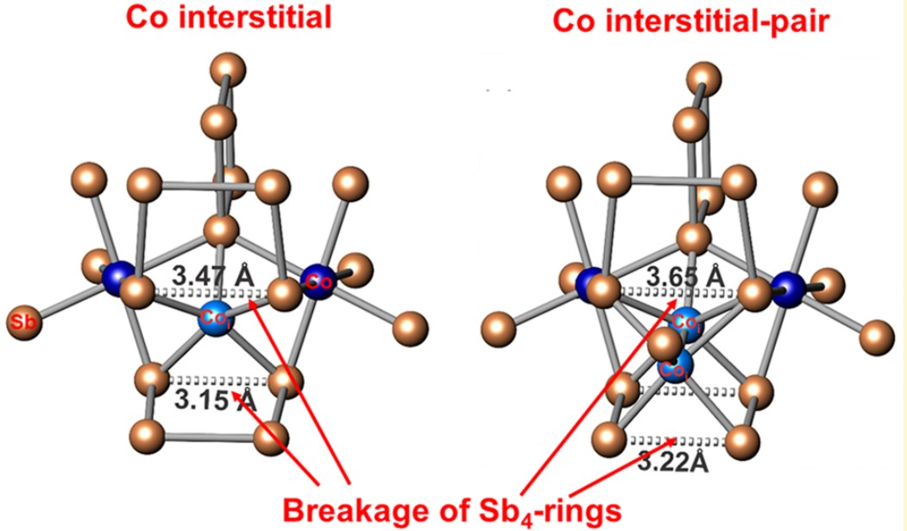
- Suppression of surface recombination in CuInSe2 (CIS) thin films via Trioctylphosphine Sulfide (TOP:S) surface passivation
- Luo, S.; Eisler, C.; Wong, T.; Xiao, H.; Lin, C.; Wu, T.; Shen, C.; Shieh, J.; Tsai, C.; Liu, C.; Atwater, H. A.; Goddard, W. A.; Lee, J.; Greer, J. R.
- Acta Materialia 106, 171-181
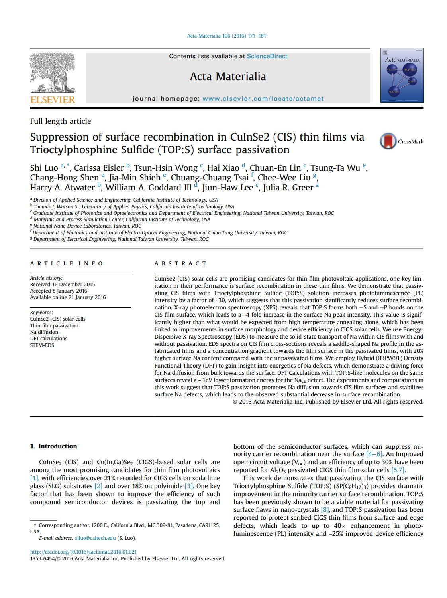
- Mechanistic Explanation of the pH Dependence and Onset Potentials for Hydrocarbon Products from Electrochemical Reduction of CO on Cu (111)
- Xiao, H.; Cheng, T.; Goddard, W. A.; Sundararaman, R.
- Journal of the American Chemical Society 138, 483-486
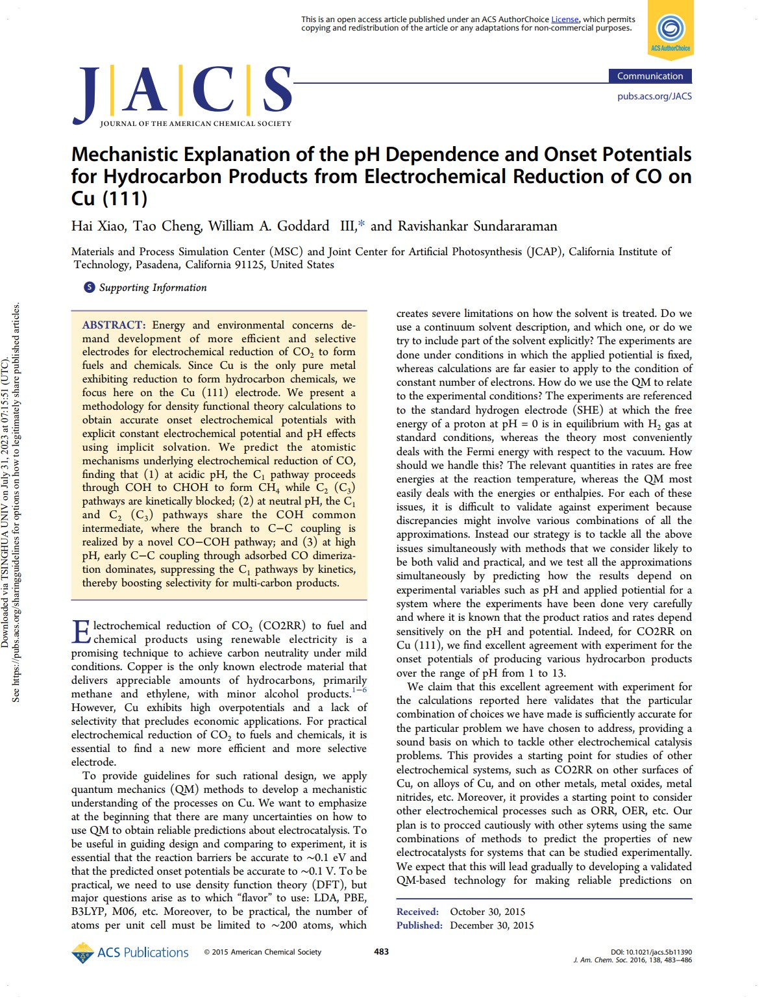
- Free-Energy Barriers and Reaction Mechanisms for the Electrochemical Reduction of CO on the Cu(100) Surface, Including Multiple Layers of Explicit Solvent at pH 0
- Cheng, T.; Xiao, H.; Goddard, W. A.
- The Journal of Physical Chemistry Letters 6, 4767-4773
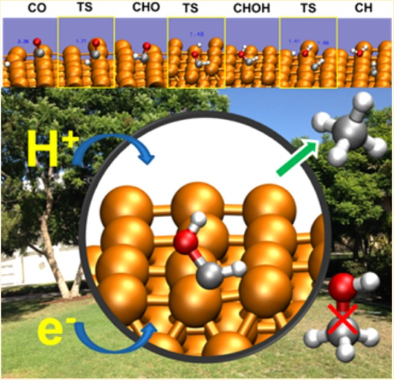
- Non-adiabatic dynamics modeling framework for materials in extreme conditions
- Xiao, H.; Jaramillo-Botero, A.; Theofanis, P. L.; Goddard, W. A.
- Mechanics of Materials 90, 243-252
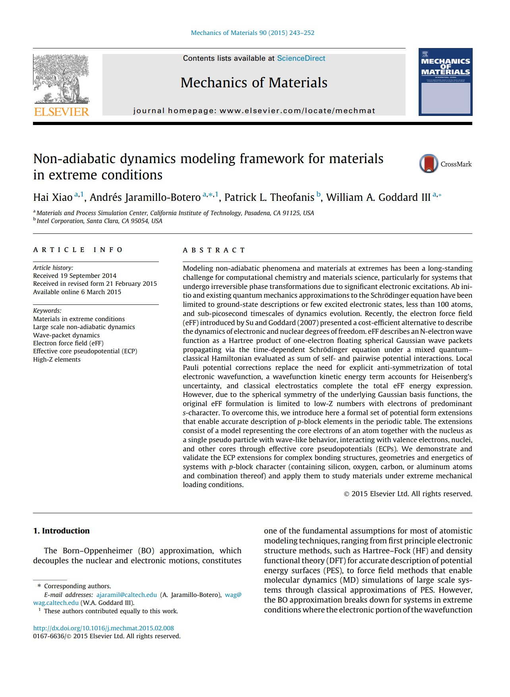
- First principles based multiparadigm modeling of electronic structures and dynamics
- Xiao, H.
- California Institute of Technology
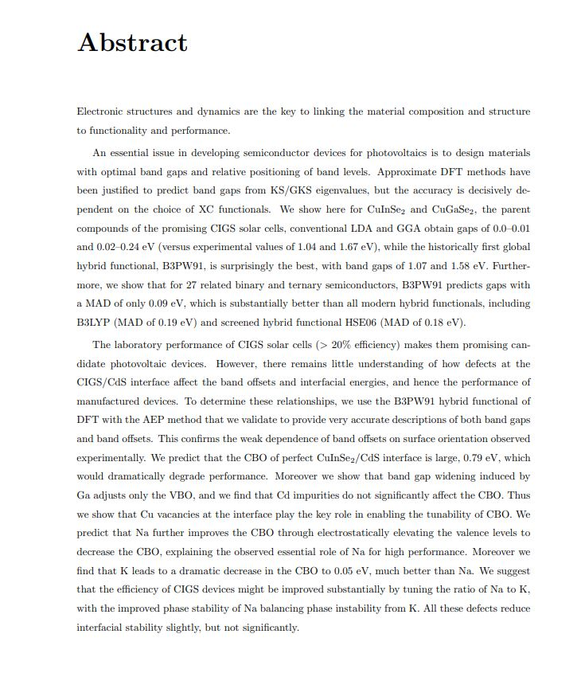
- Initial Steps of Thermal Decomposition of Dihydroxylammonium 5,5′-bistetrazole-1,1′-diolate Crystals from Quantum Mechanics
- An, Q.; Liu, W.-G.; Goddard, W. A.; Cheng, T.; Zybin, S. V.; Xiao, H.
- The Journal of Physical Chemistry C 118, 27175-27181
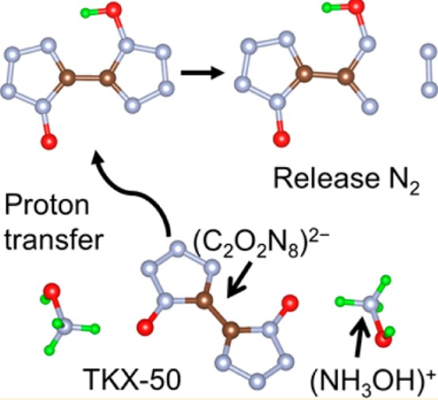
- Predicted roles of defects on band offsets and energetics at CIGS (Cu (In, Ga) Se2/CdS) solar cell interfaces and implications for improving performance
- Xiao H.; Goddard, W. A.
- The Journal of Chemical Physics 141, 094701
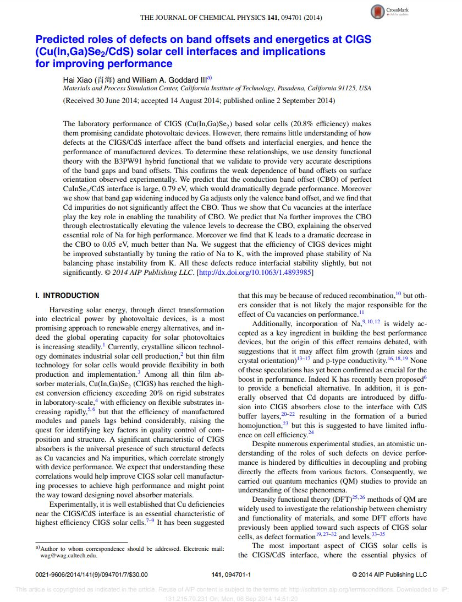
- Deformation Induced Solid–Solid Phase Transitions in Gamma Boron
- An, Q.; Goddard, W. A.; Xiao, H.; Cheng, T.
- Chemistry of Materials 26, 4289-4298
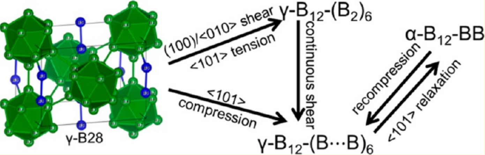
- Stability of NNO and NPO Nanotube Crystals
- An, Q.; Xiao, H.; Goddard, W. A.; Meng, X.
- The Journal of Physical Chemistry Letters 5, 485-489
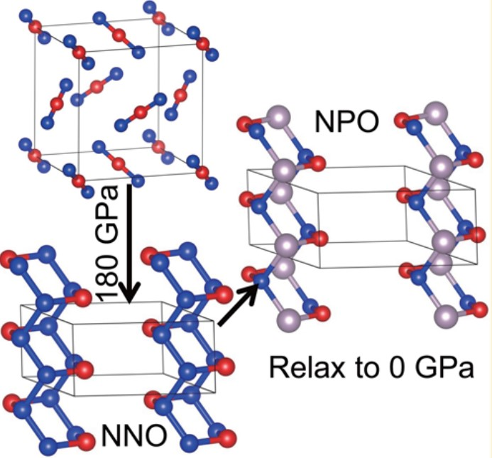
- Formation of the -N(NO)N(NO)- polymer at high pressure and stabilization at ambient conditions
- Xiao, H.; An, Q.; Goddard, W. A.; Liu, W. G.; Zybin, S. V.
- Proceedings of the National Academy of Sciences 110, 5321-5325
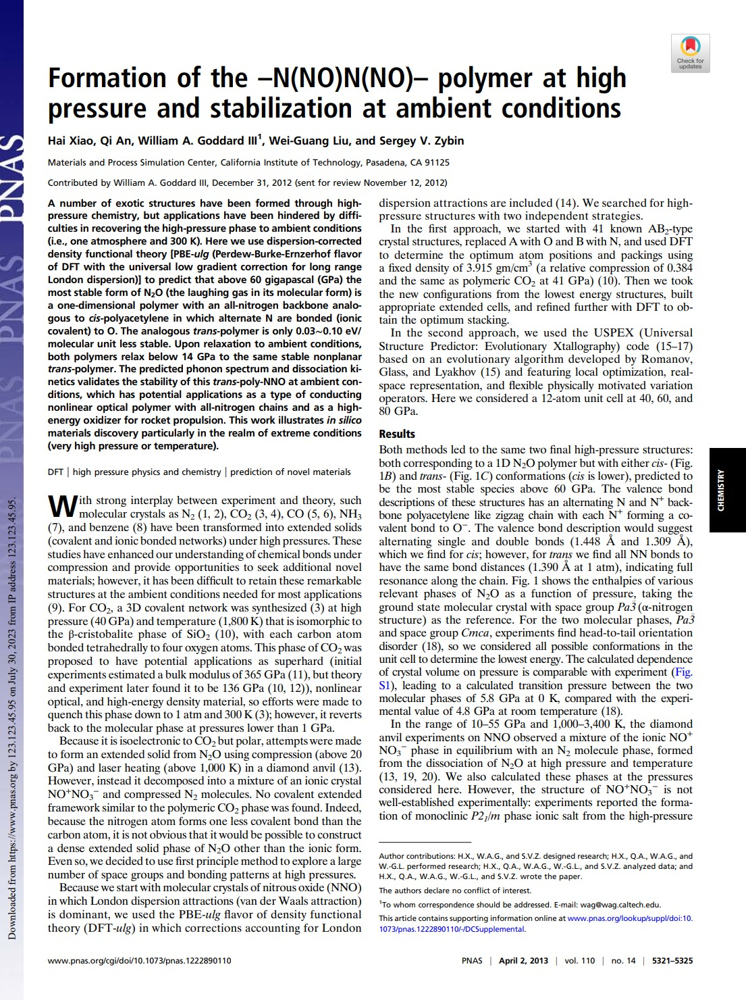
- Dependence on the structure and surface polarity of ZnS photocatalytic activities of water splitting: first-principles calculations
- Meng X.; Xiao H.; Wen X.; Goddard, W. A.; Li S.; Qin G.
- Physical Chemistry Chemical Physics 15, 9531-9539
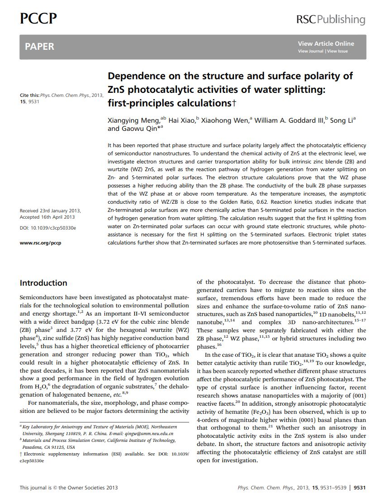
- Nonadiabatic Study of Dynamic Electronic Effects during Brittle Fracture of Silicon
- Theofanis P.; Jaramillo-Botero A., Goddard, W. A.; Xiao H.
- Physical Review Letters 108, 045501
- Accurate Band Gaps for Semiconductors from Density Functional Theory
- Xiao, H.; Tahir-Kheli, J.; Goddard, W. A.
- The Journal of Physical Chemistry Letters 2, 212-217
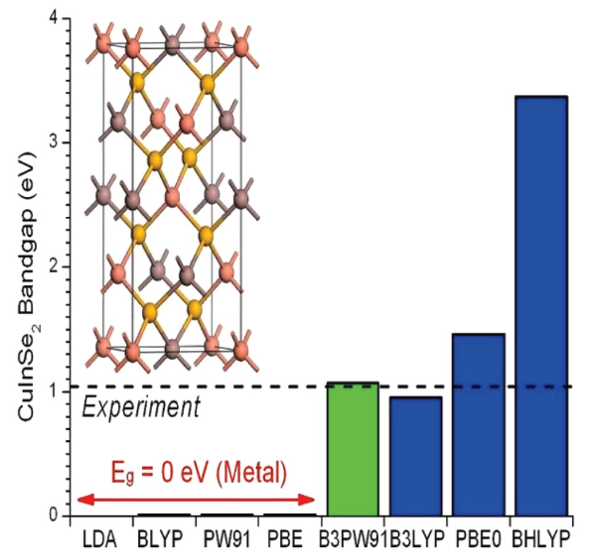
- Theoretical Investigations of Geometry, Electronic Structure and Stability of UO6: Octahedral Uranium Hexoxide and Its Isomers
- Xiao H.; Hu H.; Schwarz W.; Li J.
- The Journal of Physical Chemistry A 114, 8837-8844
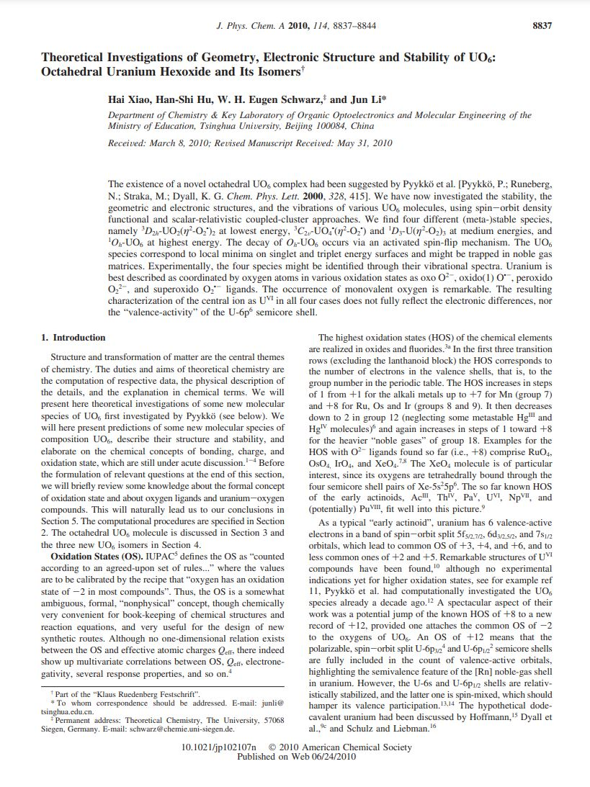
- Benchmark Calculations on the Atomization Enthalpy, Geometry and Vibrational Frequencies of UF6 with Relativistic DFT Methods
- Xiao H.; Li J.
- Chinese Journal of Structural Chemistry 27, 967-974
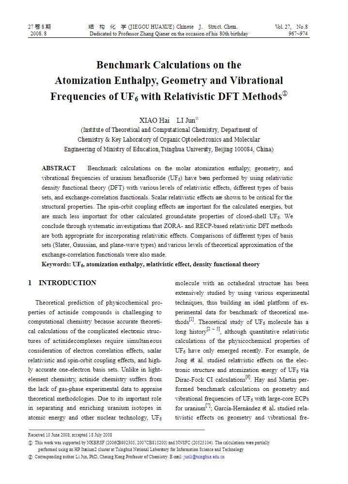
- Pd2@ Sn184-: Fusion of Two Endohedral Stannaspherenes
- Sun Z.; Xiao H.; Li J.; Wang L.
- Journal of the American Chemical Society 129, 9560-9561
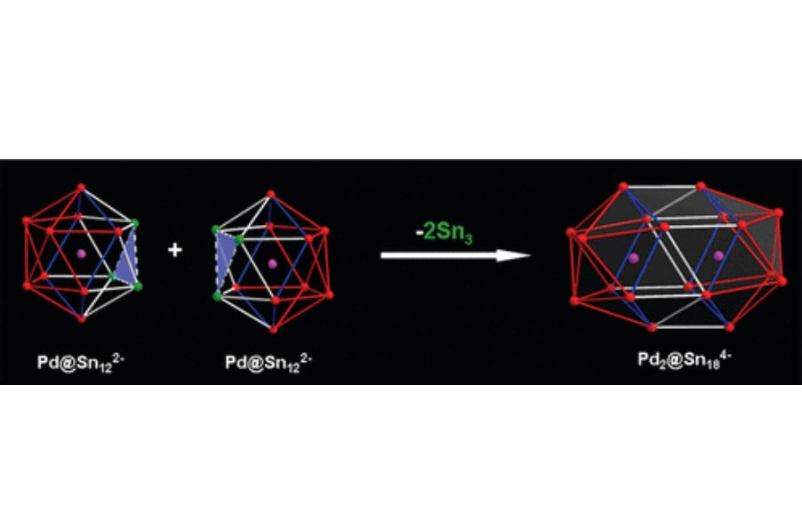
- Hybrid Combination of Quantum Mechanics with Quantum-Based Polarizable Reactive Force Field for Large Scale Full Solvent Simulations of Electrocatalysis
- Naserifar S.; Kwon S.; Xiao H.; Goddard, W. A.
- Available at SSRN 3608390